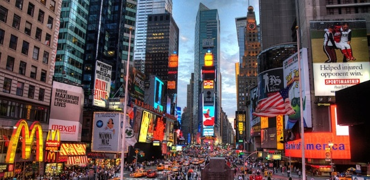

Sobre a Conexão
Este site é um convite para explorar e valorizar a profunda relação entre a cidade e o campo. Longe de serem entidades separadas, elas coexistem e se nutrem mutuamente. A cidade depende do campo para seus recursos essenciais – alimentos, água, energia, matérias-primas – enquanto o campo encontra na cidade mercados, tecnologia e acesso a serviços.
Nosso objetivo é destacar essa simbiose, promover a compreensão mútua e incentivar iniciativas que fortalecem esses laços vitais para um desenvolvimento equilibrado e sustentável.


Eventos e Iniciativas
Confira alguns dos eventos que celebram a conexão entre cidade e campo:
Feira do Produtor Rural
Uma oportunidade para comprar produtos frescos diretamente do campo e conhecer os produtores locais.
Próxima edição: 15 de Julho
Workshop de Horta Urbana
Aprenda a cultivar seus próprios alimentos mesmo em espaços pequenos na cidade.
Inscrições abertas!
Festival Gastronômico da Roça
Experimente pratos típicos e inovadores que unem sabores do campo e da cidade.
Agosto (datas a confirmar)
Tem um evento para divulgar? Fale conosco!
Entre em Contato
Quer saber mais, compartilhar uma história ou propor uma parceria? Envie-nos uma mensagem!